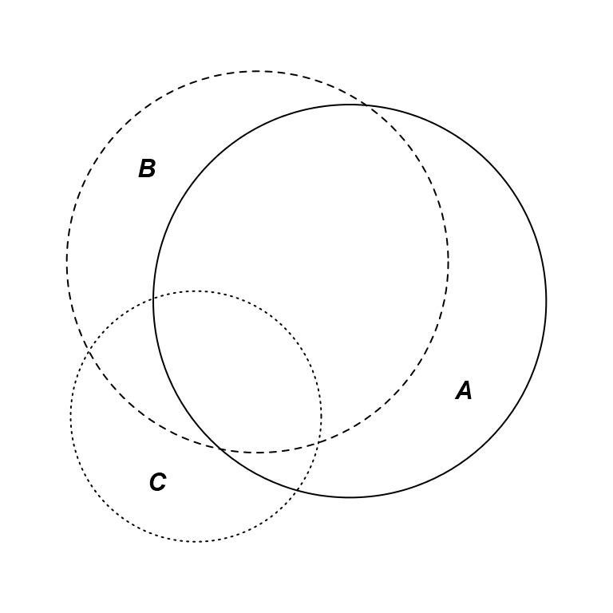
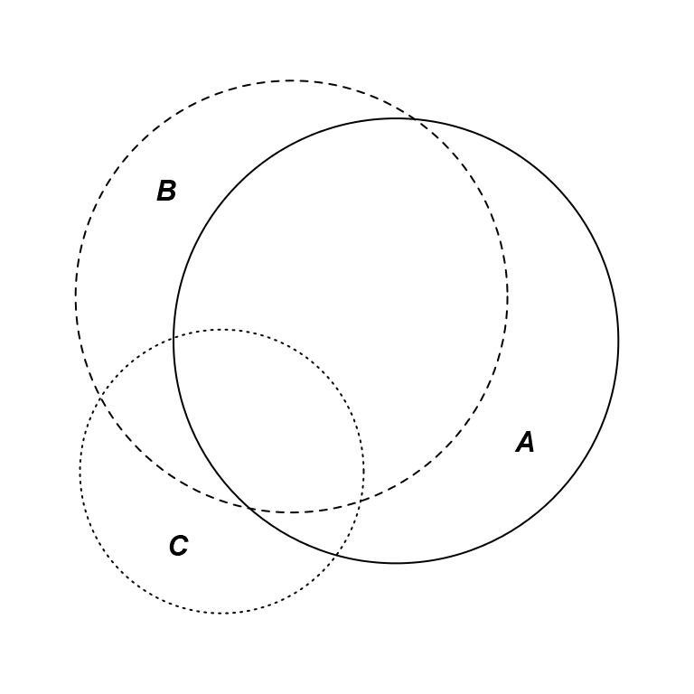

An introduction to eulerr
Johan Larsson
2017-02-05
eulerr generates area-proportional euler diagrams that display set relationships (intersections, unions, and disjoints) with circles. Euler diagrams are Venn diagrams without the requirement that all set interactions be present (whether they are empty or not). That is, depending on input, eulerr will sometimes produce Venn diagrams but sometimes not.
Background
R features a number of packages that produce euler and/or venn diagrams; some of the more prominent ones (on CRAN) are
- eVenn,
- VennDiagram,
- venn,
- colorfulVennPlot, and
- venneuler.
The last of these (venneuler) serves as the primary inspiration for this package, along with the refinements that Ben Fredrickson has presented on his blog and made available in his javascript venn.js.
venneuler, however, is known to produce imperfect output for set configurations that have perfect solutions. Consider, for instance, the following example in which the intersection between A and B is both needless and unwanted.
venn_fit <- venneuler::venneuler(c(A = 75, B = 50, "A&B" = 0))
par(mar = c(0, 0, 0, 0))
plot(venn_fit)venneuler plot with unwanted overlap.
Enter eulerr
eulerr is based on the improvements to venneuler that Ben Fredrickson introduced with venn.js but has been recoded from scratch, uses different optimizers, and returns statistics featured in venneuler and eulerAPE.
Input
At the time of writing, it is possible to provide input to eulerr as either
- a named numeric vector with set combinations as
- disjoint set combinations or
- unions
- a matrix of logicals with columns representing sets and rows the set relationships for each observation.
library(eulerr)
# Input in the form of a named numeric vector
fit1 <- euler(c("A" = 25, "B" = 5, "C" = 5,
"A&B" = 5, "A&C" = 5, "B&C" = 3,
"A&B&C" = 3))
# Input as a matrix of logicals
set.seed(1)
mat <- cbind(
A = sample(c(TRUE, TRUE, FALSE), size = 50, replace = TRUE),
B = sample(c(TRUE, FALSE), size = 50, replace = TRUE),
C = sample(c(TRUE, FALSE, FALSE, FALSE), size = 50, replace = TRUE)
)
fit2 <- euler(mat)Fit
We inspect our results by printing the eulerr object
fit2## original fitted residuals region_error
## A 10 10.025 -0.025 0.003
## B 7 7.040 -0.040 0.003
## C 5 5.049 -0.049 0.002
## A&B 15 14.966 0.034 0.003
## A&C 1 0.563 0.437 0.010
## B&C 2 1.777 0.223 0.005
## A&B&C 5 5.071 -0.071 0.003
##
## diag_error: 0.01
## stress: 0.001or directly access and plot the residuals.
# Cleveland dot plot of the residuals
dotchart(resid(fit2))
abline(v = 0, lty = 3)Residuals for the eulerr fit.
This shows us that the A&B&C intersection is somewhat overrepresented in fit2. Given that these residuals are on the scale of the original values, however, the residuals are arguably of little concern.
As an alternative, we could plot the circles in another program by retrieving their coordinates and radii
coef(fit2)## x y r
## A 4.582381 0.4106434 20.94457
## B -5.196963 4.7051254 20.32999
## C -11.965642 -11.6757970 13.35932Starting configuration
A starting configuration is obtained via a constrained version of multidimensional scaling that has been explained thoroughly elsewhere.
Optimization
The starting configuration is based solely on the two-way relationships of the sets so has to be optimized for most set relationships. We try to optimize the coordinates and radii of the solution with the objective of producing a diagram that is as accurate as possible. In this context, however, accuracy is an ambigious objective that has produced a slew of proposals. eulerr uses the sums of squares as the target loss function to minimize
\[\sum_{i=1}^{n} (y_i - \hat{y}_i) ^ 2\] where \(\hat{y}\) is the fitted disjoint areas.
Goodness-of-fit
For goodness-of-fit measures, we the stress statistic from venneuler (Wilkinson (2012))
\[\frac{\sum_{i=1}^{n} (y_i - \hat{y}_i) ^ 2}{\sum_{i=1}^{n} y_i ^ 2}\] where \(\hat{y}_i\) is an ordinary least squares estimate from the regression of the fitted areas on the original areas that is being explored during optimization.
We also provide the diagError statistic from eulerAPE (Micallef and Rodgers (2014–17AD)):
\[ \max_{i = 1, 2, \dots, n} \left| \frac{y_i}{\sum y_i} - \frac{\hat{y}_i}{\sum \hat{y}_i} \right|\] In our example, the diagError is 0.0096 and our stress is 6\times 10^{-4}, suggesting that the fit is accurate.
We can now be confident that eulerr provides a reasonable representation of our input. Were it otherwise, we would do best to stop here and look for another way to visualize our data. (I suggest the excellent UpSetR package.)
Plotting
No we get to the fun part: plotting our diagram. This is easy, as well as highly customizable, with eulerr.
plot(fit2)
# Remove fills, vary border type, and switch fontface.
plot(fit2, fill = "transparent", lty = 1:3, fontface = 4) 
eulerr plots can be modified in every possible way.
eulerr’s default color palette is taken from qualpalr – another package that I have developed – which uses color difference algorithms to generate distinct qualitative color palettes.
Acknowledgements
eulerr would not be possible without Ben Fredrickson’s work on venn.js or Leland Wilkinson’s venneuler.
References
Micallef, Luana, and Peter Rodgers. 2014–17AD. “EulerAPE: Drawing Area-Proportional 3-Venn Diagrams Using Ellipses.” PLOS ONE 9 (7): e101717. doi:10.1371/journal.pone.0101717.
Wilkinson, L. 2012. “Exact and Approximate Area-Proportional Circular Venn and Euler Diagrams.” IEEE Transactions on Visualization and Computer Graphics 18 (2): 321–31. doi:10.1109/TVCG.2011.56.